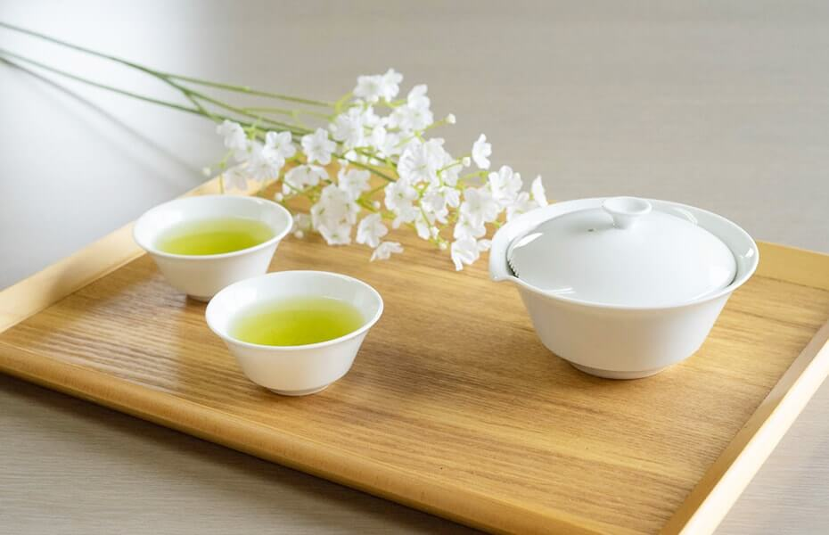
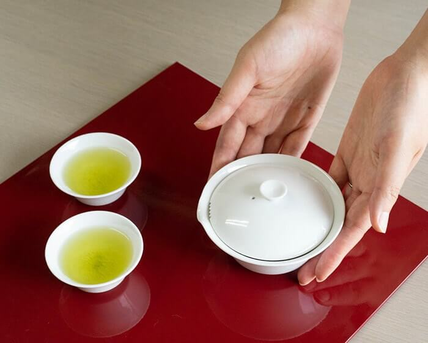
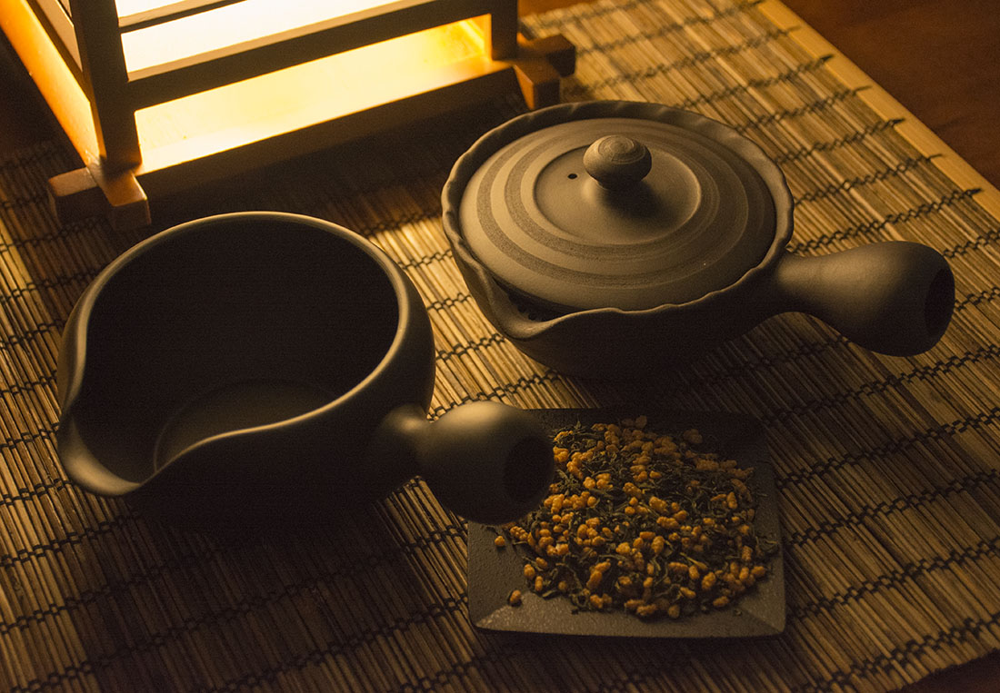
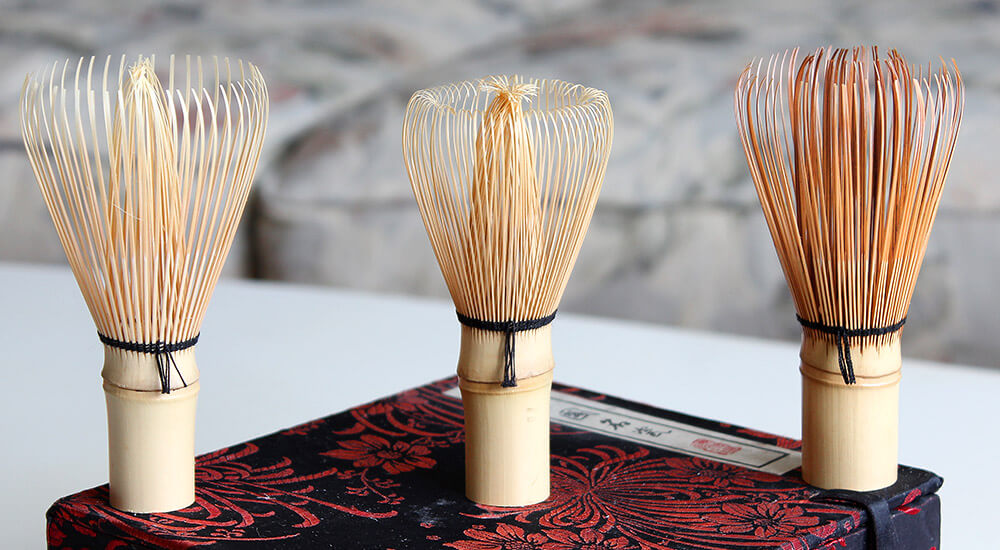
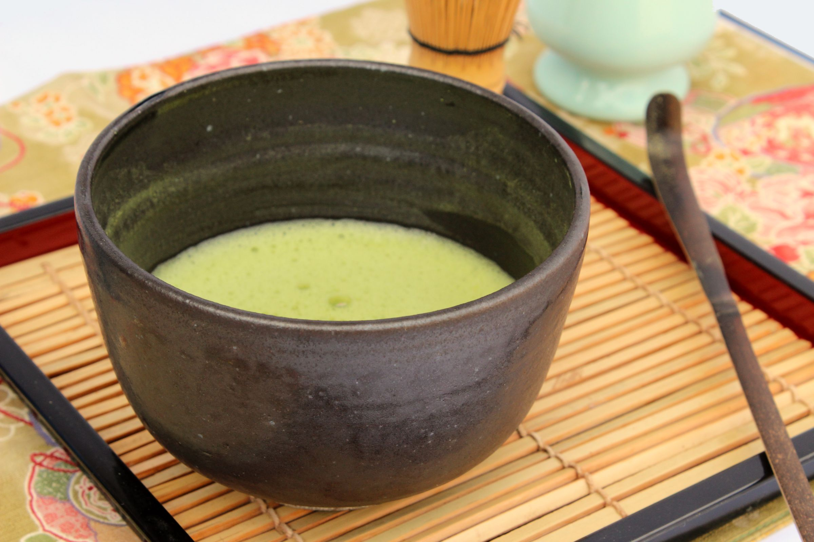

Drinkware

Kyusu
First and foremost, when drinking Japanese green tea you need a Kyusu, a Japanese tea pot. There are many kinds of drinkware depending on the situation, but the most common type is the Kyusu. This teapot is known for its serving handle being on the side of the pot, 90 degrees from the spout. This is done to make serving others an easier process. There is a non-removable, fine filter built inside to keep the leaves from entering the cups. The Kyusu was designed with drinking Sencha in mind.
The steaming process of Japanese tea results in very fine and small leaves, making the size of the filter to be of quite importance. If the filter is too big, the leaves will slide through. On the other hand, if the filter is too small, you will lose a great amount of flavor and aroma from the tea.

Dobin
Dobin, meaning earthen bottle, was designed with the intention of serving many people at once. Its size is quite large, and it has a large handle on top of the teapot. The Dobin is usually used with lower quality teas such as Bancha, Hojicha, or Kukicha.

Houhin
The Houhin is a small Kyusu without a handle. The name, translating to “treasure vessel”, is only used for the highest grade of Sencha and Gyokuro. Since these high-quality teas are brewed at low temperatures, there is no need for a handle to keep you from burning yourself. The Houhin is only used for special guests and occasions.
Yunomi
The Yunomi is a small teacup and the preferred vassal for drinking tea. It usually holds around 3fl oz-5fl oz of tea. The small size is so that one can equally enjoy every sip while keeping the rest of the tea warm in the Kyusu. The inside of the Yunomi is usually colored white. This is done so that you can clearly see the color of your tea.
Yuzamashi
The Yuzamashi is used to lower the temperature of water before you begin to steep the tea. It is about the same size as a Kyusu, but the top is open, leaving lots of space for hot water to cool. To speed up the process, water is usually transferred back and forth between the Yuzamashi and Yunomi until the desired temperature is reached.
Chasen
The Chasen is a specialized bamboo whisk used solely for preparing Matcha. Bamboo is used for its soft yet firm qualities. Many Chasen today are still made by hand, with the process taking around 2 years. A high quality Chasen will have a large quantity of bristles, usually ranging from 12 bristles all the way to 120. The Chasen is then used by whisking Matcha in the shape of a “W”.
Matcha Chawan
The Chawan is used for both preparing and drinking Matcha. It is a large bowl that is usually handmade. The width must be wide enough for the Chasen to froth the Matcha, and the height tall enough for the contents not to spill over during whisking. When preparation is finished, the Matcha tea is drank by grabbing the Chawan with both hands and sipping from the edge of it.
